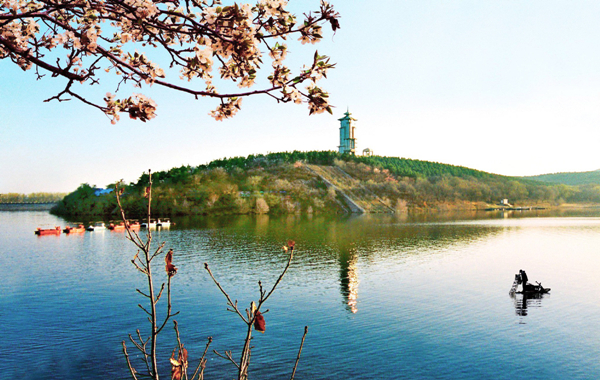
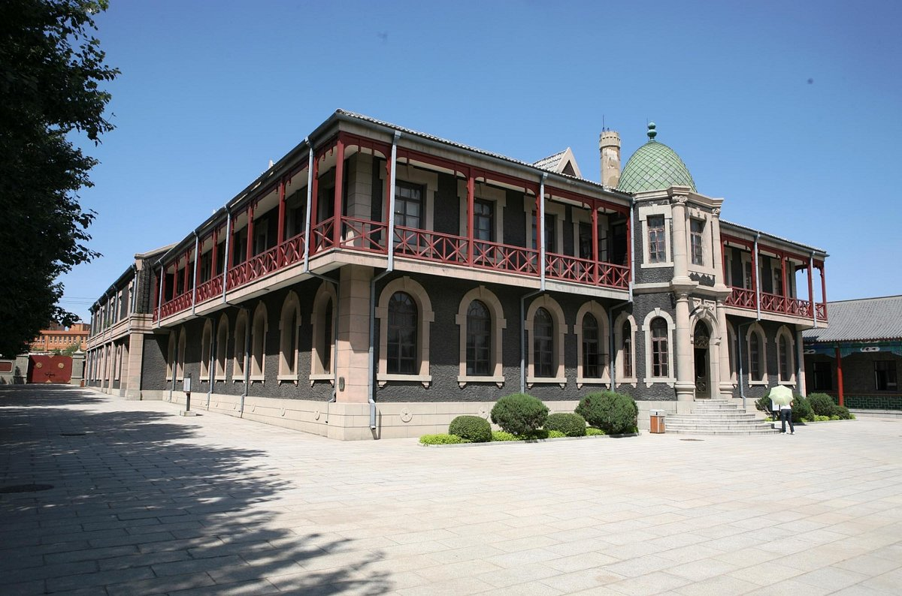
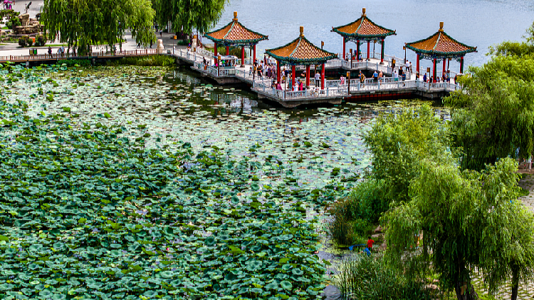

Jingyuetan National Forest Park—dubbed "Changchun’s Lung"—is a 1,000-hectare natural reserve just 18 kilometers from the city center. Its centerpiece is Jingyuetan Lake, a 4.3-square-kilometer body of water that freezes solid in winter (ice thickness reaches 1.2 meters) and shimmers with lotus flowers in summer. The park is surrounded by dense pine forests (over 3 million pine trees, some over 50 years old), creating a peaceful escape from the city’s bustle.In winter, the park transforms into a winter wonderland: locals and tourists alike come for ice fishing, snowmobiling, and even "snow hiking" along marked trails. The "Snow Sculpture Garden" (open December–February) features intricate snow carvings of animals and historical figures, lit up at night for a magical effect. In summer, the lake is popular for paddle boating and bird-watching—you might spot herons or wild ducks along the shore.
Winter (December–February): Ideal for ice activities and snow scenery. Visit in the late afternoon (3:00–5:00 PM) to see the snow sculptures lit up as the sun sets.
Summer (July–August): Great for hiking and paddle boating—temperatures stay around 25°C, and the pine forests provide shade.
Park Entry: 30 CNY/adult; 15 CNY/students (with valid ID); free for kids under 1.2 meters.
Ice Fishing Guide: 150 CNY/person (includes fishing gear and cooking).
Snowmobile Rental: 80 CNY/15 minutes; Dog Sled Rental: 120 CNY/10 minutes.

The Puppet Manchukuo Palace Museum is a powerful historical site that tells the story of Changchun’s role during Japan’s occupation of Northeast China (1932–1945). It was the official residence of Puyi, China’s last emperor, who was installed as the figurehead of the "Puppet Manchukuo" regime—a puppet state controlled by Japan.
Year-round: The museum is indoors (18°C–22°C) and open daily except Monday.
Weekdays: Avoid weekends, when school groups and tourists crowd the exhibits. Visit on a Tuesday or Wednesday for a quieter experience.
Palace Entry: 40 CNY/adult; 20 CNY/students (with valid ID); free for kids under 1.3 meters.
Audio Guide: 30 CNY/rental (available in Chinese, English, Japanese, and Korean).
Underground Bunker: Included in the palace ticket—no extra charge.

Nanhu Park is Changchun’s most beloved urban park, covering 222 hectares (half of which is Nanhu Lake, a 1.1-square-kilometer lake). It’s a favorite spot for locals to relax, exercise, and enjoy nature—no matter the season.In winter (December–February), the lake freezes over and becomes a massive outdoor ice-skating rink. Locals of all ages lace up their skates (rentals: 30 CNY/hour) and glide across the ice, while vendors sell hot drinks (soybean milk, ginger tea) and snacks (fried dough sticks, candied hawthorns) nearby. The park’s trees are decorated with colorful lights during the holidays, making it a festive spot for evening walks.In summer (June–August), the lake is dotted with paddle boats (60 CNY/hour for a 2-person boat) and lotus flowers. The park’s winding paths are lined with willow trees and flower beds, and there are picnic areas where families gather to eat homemade food. There’s even a small amusement park with a Ferris wheel (40 CNY/ride) that offers views of the lake and city skyline.
Winter (December–January): Perfect for ice-skating and festive lights.
Summer (July–August): Great for paddle boating and lotus viewing.
Autumn (September–October): The park’s maple trees turn red and gold—ideal for casual walks.
Park Entry: Free (no charge to enter the park).
Ice-Skate Rental: 30 CNY/hour (includes skates and a locker for your bags).
Paddle Boat Rental: 60 CNY/hour (2-person boat); 80 CNY/hour (4-person boat).
Ferris Wheel Ride: 40 CNY/adult; 20 CNY/kids (1.2–1.4 meters).